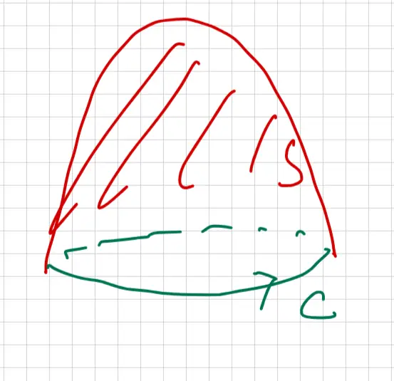
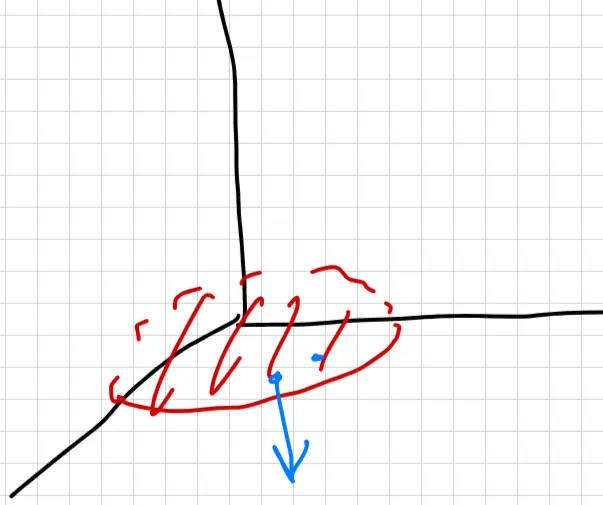

Lesson 36: Divergence Theorem - I (17.8)
Announcements:
- Exam 2 on Tuesday (04/21), 8PM-9PM, Elliot Hall
- SI Session exam review on Sunday
- No lecture on 04/24 (compensation for evening exam)
- Final exam on Tuesday (05/05), 1PM-3PM.
Accessible transcription generated on 4/17/2026
\[ \phi = xyz \sin(x^2 y z) \]
\[ \vec{F} = \vec{\nabla} \phi \]
\( S \): \( z = 10 - x^2 - y^2 \) above \( z = 2 \)
What is \( \iint_{S} \text{curl } \vec{F} \cdot d\vec{S} \)?

① Apply Stokes' Theorem:
\[ \iint_{S} \text{curl } \vec{F} \cdot d\vec{S} = \oint_{C} \vec{F} \cdot d\vec{r} \] \[ = \oint_{C} \vec{\nabla} \phi \cdot d\vec{r} = 0 \]② \( \text{curl}(\vec{\nabla} \phi) = 0 \)
The gradient of the scalar field is:
\[ \vec{\nabla} \phi = \langle \phi_x, \phi_y, \phi_z \rangle \]Calculating the curl of this gradient field:
\[ \text{curl}(\vec{\nabla} \phi) = \begin{vmatrix} \mathbf{i} & \mathbf{j} & \mathbf{k} \\ \frac{\partial}{\partial x} & \frac{\partial}{\partial y} & \frac{\partial}{\partial z} \\ \phi_x & \phi_y & \phi_z \end{vmatrix} = \langle 0, 0, 0 \rangle \]Since the curl of the vector field \( \vec{F} \) is the zero vector everywhere, the surface integral is zero.
Relates surface integral to triple integral.
Following the same theme: integral "cancels" derivative, compute on boundary.
\( S \) is a closed surface, with normal outwards.
\( S \) is the boundary of Region \( D \)
![A technical diagram showing three examples of closed regions in 3D space, all shaded green with red outlines to represent surfaces (S) enclosing regions (D). The first shape on the left is an irregular, amoeboid volume. The second shape in the middle is a cube. The third shape on the right is a sphere, with a dashed line across its center to provide a sense of three-dimensional depth. These shapes represent valid domains for the Divergence Theorem, where S is the boundary of region D and the normal vectors are oriented outwards.](img/lesson-36-2.webp)
Evaluate \[ \iint_{S} \vec{F} \cdot d\vec{S} \] where \( \vec{F} = \langle x, y, z \rangle \) and \( S \) is the upper half of a sphere of radius 2 and the base at \( z = 0 \), with outward normal.
![A 3D coordinate system diagram illustrating a closed hemisphere surface S. The z-axis is the vertical axis, while the x and y axes form the horizontal plane. The surface S is partitioned into two components: S1, which is the upper spherical shell of radius 2, and S2, which is the flat circular base lying in the xy-plane at z=0. The interior volume enclosed by these two surfaces is labeled D. The hemisphere is depicted with green shading and red outlines to differentiate the curved and flat parts.](img/lesson-36-3.webp)
Direct Method:
Parametrize \( S \rightarrow \) sphere part (\( S_1 \)) and flat part (\( S_2 \)).
\[ \iint_{S} \vec{F} \cdot d\vec{S} = \iint_{S_1} \vec{F} \cdot d\vec{S} + \iint_{S_2} \vec{F} \cdot d\vec{S} \]
Divergence Theorem Method:
Using the Divergence Theorem:
\[ \iint_{S} \vec{F} \cdot d\vec{S} = \iiint_{D} \text{div} \vec{F} \, dV \]
First, calculate the divergence of \( \vec{F} \):
\[ \text{div} \vec{F} = \frac{\partial}{\partial x}(x) + \frac{\partial}{\partial y}(y) + \frac{\partial}{\partial z}(z) = 1 + 1 + 1 = 3 \]
Now, substitute the divergence back into the triple integral:
\[ \iiint_{D} 3 \, dV = 3 \iiint_{D} 1 \, dV \]
\[ = 3 \times \text{Volume of } D \]
\[ = 3 \times \frac{1}{2} \times (\text{Volume of sphere of radius 2}) \]
\[ = 3 \times \frac{1}{2} \times \frac{4}{3} \pi (2)^3 \]
\[ = 3 \times \frac{1}{2} \times \frac{4}{3} \pi \times 8 \]
\[ = 16\pi \]
![A 3D coordinate diagram illustrating a hemisphere in a Cartesian coordinate system. The diagram shows the x, y, and z axes. A red-outlined hemisphere sits on the xy-plane, centered at the origin, with its curved surface extending into the positive z-space. Shaded diagonal lines fill the interior volume of the hemisphere. A solid black vector representing the radial distance \(\rho\) is drawn from the origin to a point on the spherical surface. The polar angle \(\phi\) is indicated as the angle between the positive vertical z-axis and the radial vector. The azimuthal angle \(\theta\) represents the rotation around the z-axis within the xy-plane. This visual setup is used to determine the integration limits for finding the volume.](img/lesson-36-4.webp)
find bounds using spherical coordinate
\( 0 \le \rho \le 2 \)
\( 0 \le \phi \le \pi/2 \)
\( 0 \le \theta \le 2\pi \)
\( dV = \rho^2 \sin \phi \, d\rho \, d\phi \, d\theta \)
\[ \iiint_D 1 \, dV = \int_0^{2\pi} \int_0^{\pi/2} \int_0^2 \rho^2 \sin \phi \, d\rho \, d\phi \, d\theta \] \[ = \left( \left. \frac{\rho^3}{3} \right|_0^2 \right) \left( \left. -\cos \phi \right|_0^{\pi/2} \right) \left( \left. \theta \right|_0^{2\pi} \right) = \frac{8}{3} \times 1 \times 2\pi = \frac{16\pi}{3} \]![3D coordinate system diagram showing a red hemisphere, labeled S1, located in the upper half-space where z is greater than or equal to 0. The hemisphere is centered at the origin (0,0,0). There are three blue arrows pointing radially outward from different points on the surface of the hemisphere, representing normal vectors. The left side of the hemisphere is shaded with diagonal red lines. The axes are labeled with the vertical axis pointing up as z, the horizontal axis pointing to the right as y, and the third axis pointing out towards the viewer as x.](img/lesson-36-5.webp)
The parameterization of the surface is given by: \[ \vec{r}(u, v) = \left\langle u, v, \sqrt{4 - u^2 - v^2} \right\rangle \]
The surface integral of a vector field \( \vec{F} \) over surface \( S_1 \) is defined as: \[ \iint_{S_1} \vec{F} \cdot d\vec{S} = \iint_{R} \vec{F}(\vec{r}(u, v)) \cdot (\vec{r}_u \times \vec{r}_v) \, dA \]
Substituting the components into the integral over the region \( R \): \[ = \iint_{R} \left( \frac{u^2 + v^2}{\sqrt{4 - u^2 - v^2}} + \sqrt{4 - u^2 - v^2} \right) \, dA \]
Combining the terms simplifies the integrand: \[ = \iint_{R} \frac{4}{\sqrt{4 - u^2 - v^2}} \, dA \]
![A coordinate plane diagram showing the region R in the uv-plane. The region is a circle centered at the origin, with the horizontal axis labeled 'u' and the vertical axis labeled 'v'. The interior of the circle is shaded with diagonal blue lines. The boundary of the circle is labeled with the equation u^2 + v^2 = 4. A point is marked on the circle's boundary, and a radius line is drawn from the origin to that point. The polar angle theta is indicated with a curved arrow starting from the positive u-axis.](img/lesson-36-6.webp)
Use polar on R:
\( dA = r \, dr \, d\theta \)
\( 0 \leq r \leq 2, \quad 0 \leq \theta \leq 2\pi \)
\( u^2 + v^2 = r^2 \)
The integral in polar coordinates becomes: \[ = \int_{0}^{2\pi} \int_{0}^{2} \frac{4}{\sqrt{4 - r^2}} \cdot r \, dr \, d\theta \]
Substitution:
Let \( 4 - r^2 = t \), then \( -2r \, dr = dt \).
Bounds for \( t \):
\( r = 0 \Rightarrow t = 4 \)
\( r = 2 \Rightarrow t = 0 \)
Completing the calculation: \[ = -\frac{1}{2} \int_{0}^{2\pi} \int_{4}^{0} \frac{4}{\sqrt{t}} \, dt \, d\theta = -\frac{1}{2} \cdot 2\pi \cdot 4 \left. \frac{t^{1/2}}{1/2} \right|_{4}^{0} = 16\pi \]
on \( S_2 \): Disk of radius 2 on xy plane (\( z = 0 \))

\[ \vec{F} = \langle x, y, z \rangle \xrightarrow{\text{on } S_2} \vec{F} = \langle x, y, 0 \rangle \]
\[ \vec{n} = \langle 0, 0, -1 \rangle \]
\[ \iint_{S_2} \vec{F} \cdot d\vec{S} = \iint_{S_2} \vec{F} \cdot \vec{n} \, dS = 0 \]
\[ \iint_{S} \vec{F} \cdot d\vec{S} = \iint_{S_1} \vec{F} \cdot d\vec{S} + \iint_{S_2} \vec{F} \cdot d\vec{S} = 16\pi + 0 \] \[ = 16\pi \]
Consider the vector field \(\vec{F} = \left\langle \frac{xy^2}{2}, \frac{y^3}{6}, zx^2 \right\rangle\) and the surface \(S\), which is a cylinder defined by \(x^2 + y^2 = 1\), capped at \(z = \pm 1\), with an outward-pointing normal.

The flux through the closed surface \(S\) can be calculated directly (without the Divergence Theorem) by summing the flux through each of its three component surfaces: \[ \iint_S \vec{F} \cdot d\vec{S} = \iint_{S_1} \vec{F} \cdot d\vec{S} + \iint_{S_2} \vec{F} \cdot d\vec{S} + \iint_{S_3} \vec{F} \cdot d\vec{S} \]
Alternatively, applying the Divergence Theorem: \[ \iint_S \vec{F} \cdot d\vec{S} = \iiint_D \text{div} \vec{F} \, dV \] First, we find the divergence of the field \(\vec{F}\): \[ \text{div} \vec{F} = \frac{\partial}{\partial x}\left(\frac{xy^2}{2}\right) + \frac{\partial}{\partial y}\left(\frac{y^3}{6}\right) + \frac{\partial}{\partial z}(zx^2) = \frac{y^2}{2} + \frac{y^2}{2} + x^2 = x^2 + y^2 \] Substituting this into the volume integral: \[ = \iiint_D (x^2 + y^2) \, dV \]
Bounds of \(D\): Using Cylindrical Coordinates \[ dV = r \, dz \, dr \, d\theta \] \[ -1 \le z \le 1, \quad x^2 + y^2 = r^2 \] \[ 0 \le r \le 1 \] \[ 0 \le \theta \le 2\pi \]
Evaluating the triple integral: \[ = \int_0^{2\pi} \int_0^1 \int_{-1}^1 r^2 \cdot r \, dz \, dr \, d\theta \] \[ = \int_0^{2\pi} \int_0^1 2r^3 \, dr \, d\theta \] \[ = \int_0^{2\pi} \frac{1}{2} \, d\theta \] \[ = \pi \]
Let \( \vec{F} = \text{curl}(\vec{G}) \), and let \( S \) be a closed surface.
![A hand-drawn technical diagram on a white grid background depicting a mathematical or physical concept, possibly related to vector calculus. It features an irregular, green-shaded lobed region labeled with a teal capital letter 'D' in its lower-left section. The entire green area is tightly enclosed by a thin red boundary line, with a red capital letter 'S' positioned just above the top center of the shape. Three dark-red horizontal paths are drawn across the green region: the top and bottom paths are solid lines, while the middle path is composed of dashed segments. In the bottom right corner, the word 'Curl' is handwritten in black cursive, partially cropped. The diagram likely illustrates a domain or surface in the context of flux or circulation theorems.](img/lesson-36-9.webp)
What is \( \iint_S \vec{F} \cdot d\vec{S} \)?
Using the divergence thm:
\[ \iint_S \vec{F} \cdot d\vec{S} = \iiint_D \text{div} \vec{F} \, dV = \iiint_D \text{div}(\text{curl} \vec{G}) \, dV \]To prove this identity, let \( \vec{G} = \langle f, g, h \rangle \). First, we calculate the curl of \( \vec{G} \):
\[ \text{curl} \vec{G} = \begin{vmatrix} \mathbf{i} & \mathbf{j} & \mathbf{k} \\ \partial/\partial x & \partial/\partial y & \partial/\partial z \\ f & g & h \end{vmatrix} = \langle h_y - g_z, f_z - h_x, g_x - f_y \rangle \]Next, we find the divergence of the resulting vector field:
\[ \text{div}(\text{curl} \vec{G}) = h_{yx} - g_{zx} + f_{zy} - h_{xy} + g_{xz} - f_{yz} = 0 \]The result is zero because, according to Clairaut's Theorem, the mixed partial derivatives are equal (e.g., \( h_{yx} = h_{xy} \)), causing the terms to cancel out in pairs.